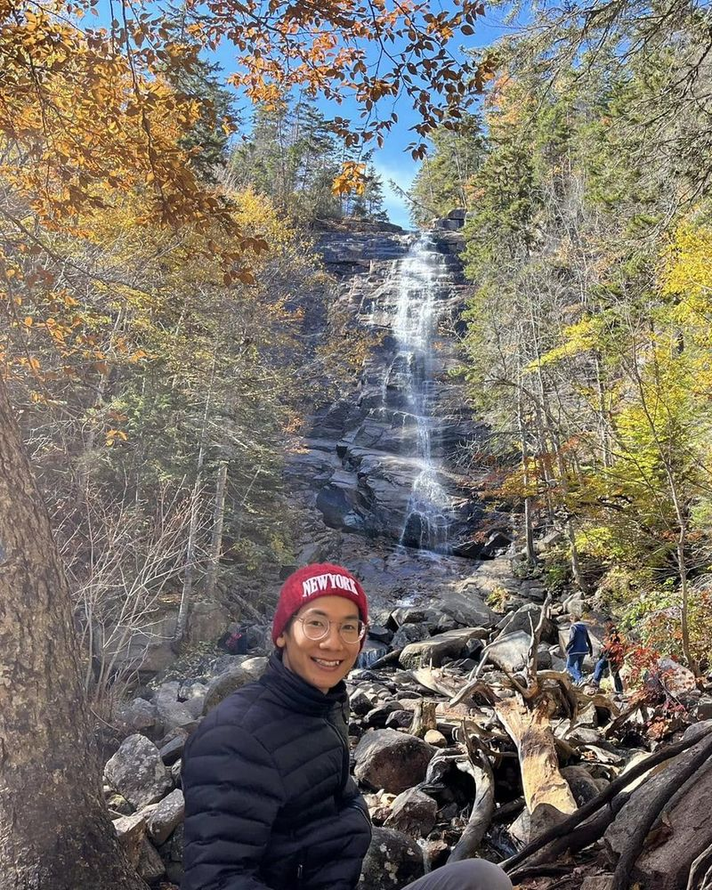

Giới thiệu
Người đứng sau chiếc máy quay
Xin chào, mình là Mìn. Đó là cái tên thân quen của mình, và cũng là người đứng sau Mìn Thích Làm Vlog.
Mình mê đi du lịch. Mỗi chuyến đi là một lý do để dậy sớm, lên đường và tò mò về mọi thứ phía trước.
Điều mình tìm khi lên đường
Với mình, đi không chỉ là ngắm cảnh. Mình thích ngồi xuống ăn những món ngon, hỏi xem món đó từ đâu ra, ai nấu, vì sao người ở đó ăn như vậy. Ẩm thực là cánh cửa dễ nhất để bước vào văn hoá của một nơi, còn những con người mình gặp dọc đường là thứ mình nhớ lâu nhất.
Mình là người năng động và luôn giữ tinh thần tích cực. Trời mưa thì có thêm chuyện để kể, lạc đường thì có thêm một con hẻm để khám phá, và món nào lạ miệng thì cứ thử một lần.
Trang này hoạt động thế nào
Mỗi chuyến đi là một bài viết. Bài mới nhất nằm trên cùng ở trang chủ, các chuyến cũ hơn nằm bên dưới. Bấm vào một bài để đọc đầy đủ, rồi dùng liên kết ở cuối bài để sang chuyến trước hoặc chuyến sau.
Đi cùng mình nhé
Bạn cũng thích đi, thích ăn ngon, thích làm quen với những nơi và những con người mới? Hãy liên hệ với mình, biết đâu chuyến đi tiếp theo chúng ta sẽ cùng tham gia.
Liên hệ
Gửi thư cho mình tại minthichlamvlog@gmail.com.
